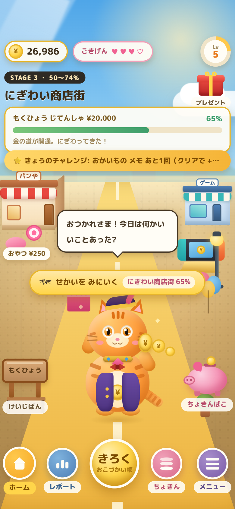
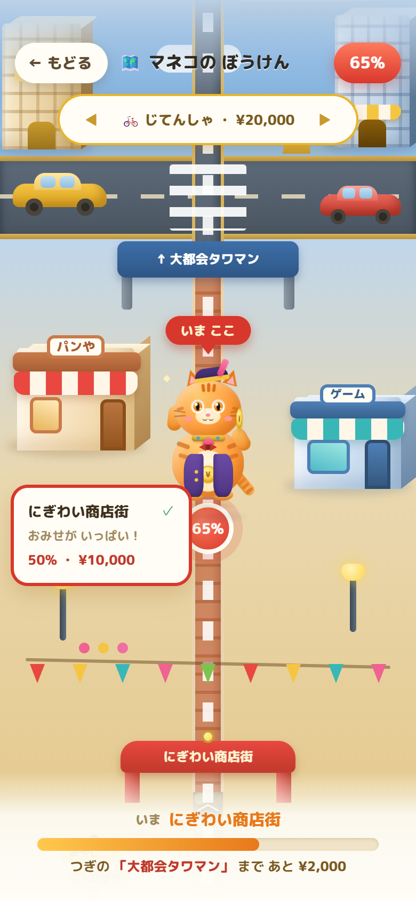
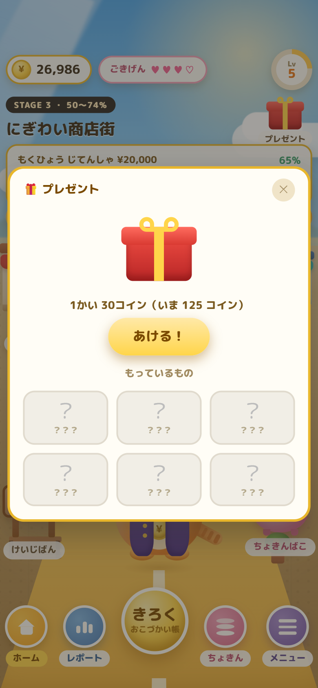
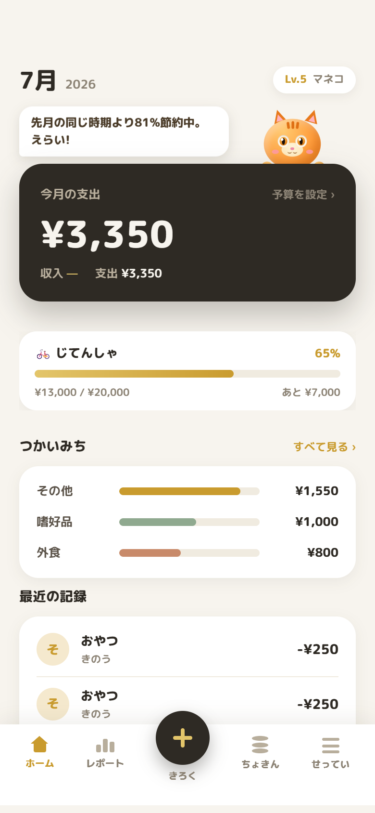
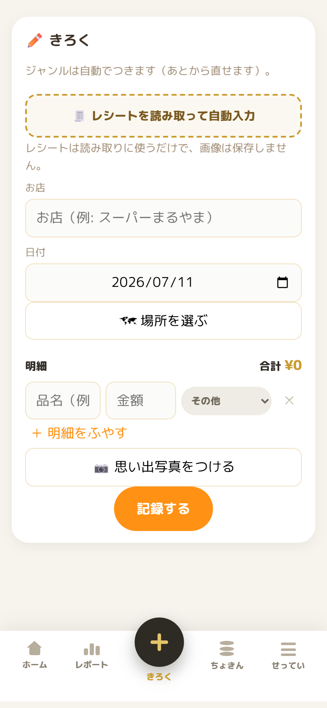
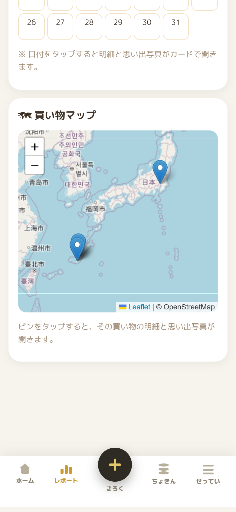
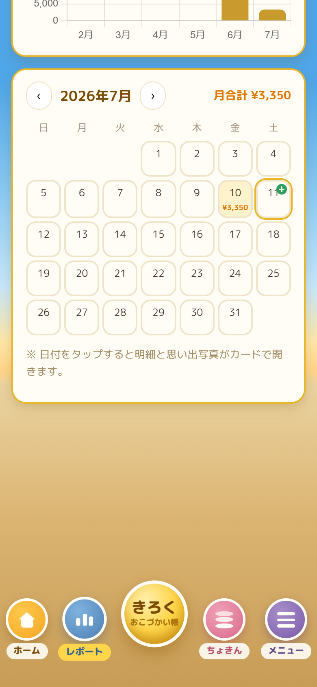
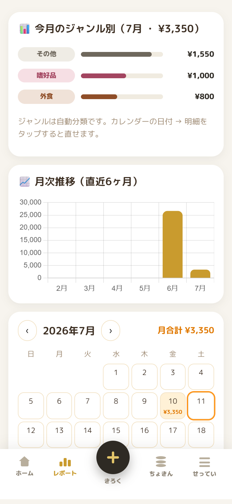

Making of · 制作記
マネコ家計簿を作った話
この家計簿、最初は“旅行専用のアプリ”でした。作っている途中で「これ、使われなくない？」と気づいて、全部ひっくり返した記録です。
1. 最初に作っていたのは、ぜんぜん違うアプリだった
「マネコ家計簿」は、招き猫のキャラクター「マネコ」と一緒に、家族みんなでお金を管理できる家計簿Webアプリです。
……なんですが、最初からこれを作ろうとしていたわけではありません。出発点は「旅行用の家計簿」でした。
以前、旅の思い出を写真と一緒に残せる家計簿アプリ「タビカケ」を作ったとき、“写真で思い出が残ると、家計簿をつけるのが意外と楽しい”という手応えがありました。それが気に入って、今回も旅行中に写真を添えて記録して、あとでアルバムや振り返りレポートが作れる——そんなアプリとして作り始めたんです。
でも、作りながらどんどん引っかかっていきました。
旅行のときしか使わないアプリは、市場が小さい。そもそも——普段の生活で使えない家計簿って、使われなくない？
ここで一度、全部ひっくり返しました。「旅行の記録」を捨てて、「毎日使われる家計簿」を作り直す。この方向転換が、マネコ家計簿の本当のスタート地点です。そこから先は、3つの問いに順番に答えていく作業でした。
2. 問い① 「毎日使える」ってなんだ？ — 答えはレシートだった
毎日使うことを考えたとき、まず気になったのが記録の「粗さ」です。スーパーで合計金額だけ入力しても、あとで見返すと「これ、何を買ったんだっけ？」。外食で何品も頼めば、どの料理がいくらだったかは残らない。金額だけの家計簿は、記録としてほとんど何も語らないんです。
だったら、レシートをそのまま取り込めばいい。撮るだけで品目ごとに読み取って、勝手にジャンル分けまでしてくれれば、手で打つより速いし、「何を買ったか」まで残ります。ここをこのアプリの心臓部にすると決めました。
ただ、最初の実装は失敗しました。AIを使わず、ブラウザで動くOCRライブラリ（Tesseract.js）で試したのですが、レシートの細かい文字とレイアウトがまるで読めず、全然うまくいきません。
そこでClaudeの画像認識（Haikuモデル）に切り替えたところ、状況が一変。レシートの情報を、基本的にほぼすべて取り込めるようになりました。レシートを宙に浮かせて撮ると少しズレが出ることはありますが、精度は十分に実用レベル。「OCRエンジンを自前で頑張るより、画像認識AIに任せる」——この判断で、アプリの核ができました。
ちなみにこのOCRは、その後も進化しています。運用コストを下げるため、現在は無料枠のあるGeminiを優先で使い、ダメなときだけClaudeに切り替えるフォールバック構成に。さらにレシートからお店の住所まで読み取って、地図に自動でピンを立てるところまでできるようになりました。
3. 問い② 子どもが“続けたくなる”には？
次の問いは「継続」です。家計簿はとにかく続きません。大人ですらそうなのに、子どもに記録を続けてもらうにはどうするか。
出した答えはシンプルです。楽しくないと続かない。そして楽しさには「変化」が要る。何かが変わっていくから、次が見たくなる。
そこで、こどもモードには招き猫から名前を取ったキャラクター「マネコ」を主役に置き、貯金が進むほど世界が育つ縦スクロールの「ぼうけんマップ」を作りました。びんぼう長屋 → かけだしの町 → にぎわい商店街 → 大都会タワマン → 黄金の都。目標ごとにマップがあり、貯めるほど景色がにぎやかになって、ホームの街並みもステージに合わせて育っていきます。
さらに、記録やチャレンジで貯まるコインで回せる衣装ガチャも用意しました。しっぽリボンやふうせん、レアな金のオーラまで全6種類。着せ替えたマネコはホームにもマップにも反映されます。「記録＝作業」を「記録＝冒険が進む」に変える仕掛けです。
4. 問い③ 家族のお金を、ひとつに
最後の問いは「誰のための家計簿か」。子どもが楽しく使えるモードと、大人が便利に使えるモードを作るなら、その2つはつながるべきだと思いました。
マネコ家計簿では、連携コードで親子のアカウントをつなげます。親がおこづかいを送ると、子どもの画面には全画面のお祝い演出つきで「おこづかいが届いたよ！」の通知が届き、そのまま自分のおこづかい帳に記録されていく。子どもは小さいころから楽しくお金の管理を覚えて、親は子どものお金の使い方を見守りながら、自分の家計もまとめて管理する。個人の家計簿ではなく、世帯の家計簿をひとつのアプリで——それがこのアプリの着地点です。
3つの問いを抜けて、作りたいものは一行にまとまりました。
子どもには楽しく、大人には便利に。
5. できあがったもの — サービスの説明
初回ログインで「こども」「おとな」の2つのモードを選びます。同じ家計データを、別の見た目で使えます。
🏘️ こどもモード「マネコタウン」



ホームは3Dの街です。おさいふ・コイン・レベル・ごきげんメーター・きょうのチャレンジが並び、記録をつけるとコインやXPが貯まります。街並みは貯金のステージに合わせて「びんぼう長屋」から少しずつにぎやかに育ち、マネコの衣装も変わります。
きろくは「おかいものメモ」。金額とジャンルを選ぶだけのかんたん入力に加えて、こども用のレシート取込も用意しました。読み取った品物が、そのままメモの行に流し込まれます。
ちょきんタブには目標ごとのちょきん箱があり、「せかいをみにいく」からぼうけんマップへ。貯めた分だけマネコが進み、チェックポイントを越えるたびに景色が変わります。そしてコインが30枚たまったらプレゼント（衣装ガチャ）。6種類の衣装は「？？？」で隠れていて、開けるまで何が出るかわかりません。
💼 おとなモード「マネコ家計簿」



おとなは実用重視です。ホームの墨色カードに今月の支出と予算の残りが大きく出て、予算バー・つかいみちの内訳・最近の記録が続きます。貯金目標は期限を決めると「毎月あと¥いくら」のペースまで教えてくれます。
きろくの主役はレシートOCR。「レシートを読み取って自動入力」を押して撮るだけで明細が品目ごとに入り、ジャンルも自動で付きます。お店の住所が読み取れたときは地図にピンまで自動でセット。この地図まわりの機能はおとなモードだけのもので、レポートの買い物マップから「どこで使ったか」を振り返れます。
📊 ふりかえり（レポート）


レポートタブの主役は月のカレンダーです。使った日に金額が乗り、日付をタップすると明細と思い出写真がカードで開きます。おこづかいなどの収入は緑の＋マークで表示されるので、こどもは「もらった・つかった」を1枚のカレンダーで振り返れます。
おとな側はさらに、ジャンル別の内訳（自動分類・あとから手直しOK）と直近6ヶ月の月次推移グラフ、そして買い物マップ。数字を打ち込むだけの家計簿ではなく、「撮って、育てて、振り返る」家計簿になりました。
このほか共通で、家族グループでの割り勘・精算、親子連携でのおこづかいのやり取りに対応。PWA対応なので、ホーム画面に追加してアプリとして起動できます。
6. 設計の説明
授業の指定に沿って、フロント＝素のTypeScript（フレームワークなしのDOM操作）、バック＝Node.js + Express、DB＝PostgreSQL の3層構成です。GitHubにpushするとRenderへ自動デプロイされ、DBにはNeonを使っています。
- フロント：
src/client/。402×840のスマホ画面をキャンバスに見立て、素のDOMで描画。ホームは絶対配置＋scale、他のタブは内側だけスクロールさせる切り分け。 - サーバ：
index.ts / api.ts / auth.ts / ocr.ts。cookieセッション認証、家族グループ、親子連携（連携コード）、レシートOCR。 - レシートOCR：無料枠のあるGeminiを優先し、失敗したらClaudeにフォールバック。住所も抽出してジオコーディングし、地図ピンまで自動でセット。
- ジャンル分け：AI任せにせず、店名・品名のルールベースで判定（スーパーの食材は「食料品」、ドラッグストアは「日用品」など）。ルールは50件超の回帰テストで守っています。
- 3Dのマネコ：
character.tsで、招き猫のデザインを three.js を使ってホーム画面に配置（キャラのデザイン自体はAIに作ってもらったものを取り込みました）。 - こども／おとなの2モードを1コードで：同じ家計データを、ログインユーザーの権限設定で出し分け。
- PWA対応：manifest ＋ Service Worker で app shell をオフラインキャッシュ。
?v=Nでアセットをバージョニング。
7. うまくいかなかったこと
正直、最初からうまくいったわけではありません。むしろ失敗の連続でした。
デザインを“再現できない”
マネコのデザインは用意されていたのに、最初はそれを自己流に“解釈”して作ってしまい、「全然違う。忠実に再現して」と差し戻された。
デザインがあるのに再現できないのか、と最初はがっかりしました。でも、使うAIモデルを変え、指示の出し方も「デザインに忠実に再現して」と変えて投げ直したら、今度はきちんと再現できた。あのときは素直に嬉しかったです。正解が手元にあるときは、我流で解釈せず、まず忠実に再現する——という当たり前を学びました。
「AIがOK」でも、使うとバグだらけ
整ったデモアカウントでは動くのに、新規ユーザーが最初に触る画面はバグだらけだった（エラーでホームごと落ちてマネコが出ない、記録までの手順が多すぎる、など）。
これは実際に自分で踏みました。AIが「確認してOK」と言っても、実際に使ってみるとバグが出る——これは他のアプリを作っているときから感じていたことです。なので慌てず、原因を落ち着いて切り分けて、フィードバックして直す。一度の会話ですべて片付くことは稀なので、それを何度も繰り返しながら、少しずつ理想の形に近づけていきました。
8. 学びになったこと
技術面で新しかったのは、デプロイ先の Render と、データベースの Neon（PostgreSQL）を初めて使ったことです。デプロイやDBまわりの手数が増えたのは、素直に良い経験でした。それ以外の実装は、これまでのアプリ開発で積み上げてきた知識でだいたい対応できました。
むしろ大きかったのは作り方・進め方の学びです。ひとつは、使うAIモデルや指示の出し方で、出てくるものの質がここまで変わるのかという驚き。開発の途中でモデルを変えたら、完成度が段違いになりました。もうひとつは、AIが「OK」と言っても、自分で実際に使うまでは完成じゃないということ。この2つは、今後どんなものを作るときにも効いてくる学びだと思います。
9. 感想 — 作るというより、育てる
振り返ると、最初からいいものが作れたわけではないし、コンセプトも最初は全然違いました。それを何度も考え直しながら、少しずつ自分のイメージに合う形へ近づけていく——作るというより、「育てる」に近い感覚でした。うまくいかない前提で、方向転換もバグ潰しも繰り返す。その過程そのものが、いちばん面白かったところかもしれません。
これからは、決済連携で明細を自動で取り込めるようにしたり、月次レポートをA4などで出力できるようにしたりと、もっと「日常でちゃんと使える家計簿」に育てていきたいです。
リンク
- 🐱 アプリ（デモ）：tabiwari-dacx.onrender.com
- 💻 GitHub：github.com/tomjoepatience-lab/tabiwari